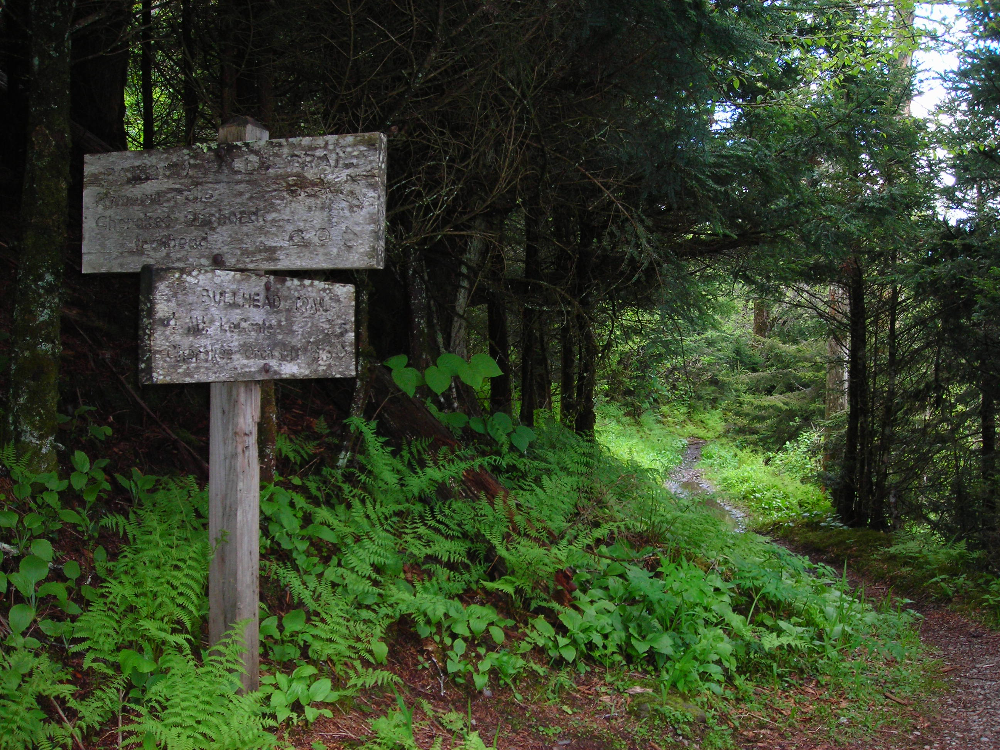

Safety Measures

Camping is a fun way to get family and friends together to enjoy the outdoors. Always be prepared for the unexpected. Do not take unnecessary chances. Do not be careless. Think before you act. Be prepared to administer basic first aid. The most effective way to prevent mishaps is to adequately prepare for the trip. Knowledge of the area, weather, terrain, limitations of your body can help to ensure a safe and enjoyable trip.
| General Tips | Trail Tips | Camping Tips | Trekking Tips | Ziplining Tips |
| Kayak, Canoeing and Rafting Tips | If you get LOST | Check list | First Aid Kit |
Trail Tips

- Before starting out, do warm-up exercises
- Stretching gradually increases heart rate, temperature and circulation to your muscles. Also, after a night's rest, your muscles need warming. Stretching gets the body going and increases your flexibility.
- Start out slowly
- Start out slowly, gradually increasing your pace and distance travelled.
- Let the slowest person
- Let the slowest person in your hiking, paddling, and biking or cross-country skiing party set the pace. This is especially important when children are a apart of your group.
- Plan the trip ahead of time and assign tasks
- Plan the trip ahead of time and assign tasks that people enjoy.
- Take turns leading
- Take turns leading the group and sharing decision-making responsibilities.Hike, bike, or ski only on marked trails in wilderness areas unless bushwhacking is allowed and you have excellent navigation skills.
- Hike and travel in groups
- Hike and travel in groups as much as possible, especially during winter and in hazardous terrain.
- Leave your itinerary
- Leave your itinerary with a friend or family member and check in with them upon your return.
- Learn basic repair skills
- Learn basic repair skills for changing a bike tire, fixing a backpack or mending a snowshoe. Remember to take repair kits on your trail.
- Dress in layers
- Mountain weather is generally cooler, cloudier, and windier than in lowland areas. For every 1,000 feet of elevation, the temperature often drops three to five degrees. Thus, it's best to dress in layers. Polyester clothing worn closest to your skin will trap warm air next to the skin and transfer or wick body moisture away.
- Wear sunglasses and a hat
- Wear sunglasses and a hat or visor when you hike, ski or paddle. Snow blindness, caused by the sun's glare on snow, can also be caused by sunlight reflecting off water and boulders. Keep your eyes and face covered especially during your first few days outdoors.
- Bring sunscreen
- Bring sunscreen no matter the season. You can get painful sunburn even in sub-freezing temperatures.
- Develop an emergency plan
- Develop an emergency plan before you start your trip. Make sure everyone knows what to do if they become lost or a medical emergency arises. Give children whistles with the instructions to "stop and blow" if they become lost.
- Take frequent rests
- Take frequent rests or vary your pace to recover from strenuous activity spurts. A steady pace will get you there with less discomfort than the sprint-and-catch-your-breath approach.
- Drink plenty of water
- Drink plenty of water. Water is heavy to carry, but thirst on the trail is a hazard. Take a tip from athletes: before a hike, drink some water so you're well hydrated and energized. Never drink your total supply between refills.
- Drink plenty of water
- Drink plenty of water. Water is heavy to carry, but thirst on the trail is a hazard. Take a tip from athletes: before a hike, drink some water so you're well hydrated and energized. Never drink your total supply between refills.
- Treat or filter all water
- Backcountry water supplies are unpredictable. It's better to arrive at a gushing stream with 1/3 quart of water left, than to arrive at an empty stream and have no water left at all. Treat or filter all water.
- Pack carbohydrate-energy bars
- Pack carbohydrate-energy bars, granola, candy, or fruit. They provide an instant pick-me-up on the trail.
- Keep pets on leashes
- Many national parks and forests and many state parks prohibit dogs. Be sure to keep pets on leashes in restricted areas, especially in cattle and sheep country. Bring water for pets and make sure they have name tags. Watch for injuries to your dog's footpads in rocky areas, on ice or in extremely hot terrain.
- Give yourself about two hour's daylight to set up camp.
- Pay attention to local regulations, particularly concerning campfires. In many desert or drought areas, fires are prohibited and you must use a camp stove.